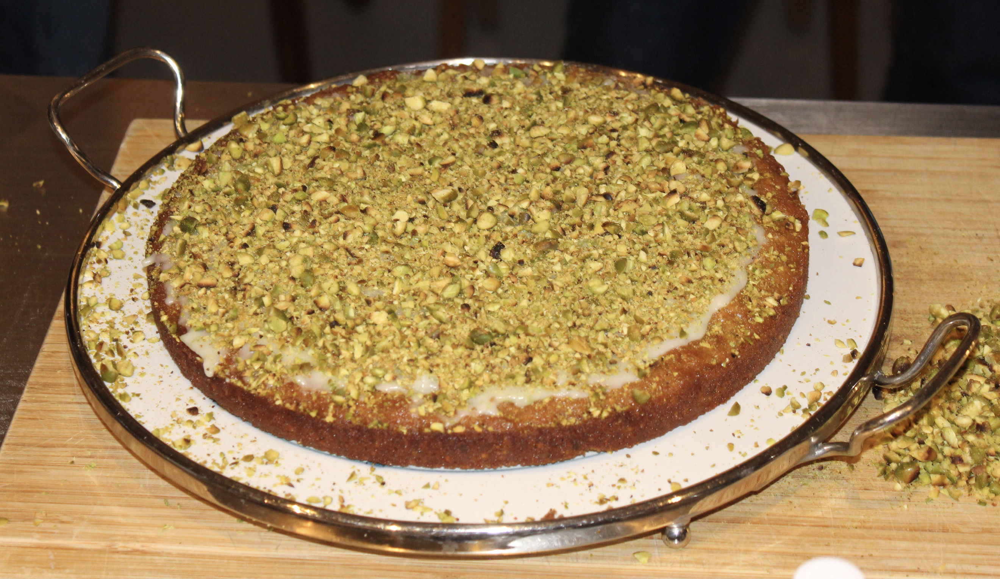

Recipes
Pistazien Limetten Cake

Pistazien sind ein Evergreen in meinen Gebäcken und Desserts. Kardamom und Rosenwasser verstärken die orientalische Note in diesem Cake, der am besten mit einer Kugel Basilikum-Eis serviert wird.
Zutaten
Teig
- 5 Eier
- 110 g brauner Zucker
- 200 g Butter, geschmolzen
- 50 g Mehl
- 0.5 TL Backpulver
- 200 g gemahlene Pistazien
- 1 unbehandelte Limette, abgeriebene Schale und Saft
- 0.5 TL Kardamom, gemahlen
Guss
- 100 g Puderzucker
- 1 EL Limettensaft
- 1 EL Rosenwasser
- 100 g Pistazien, geröstet und grob gehackt
- 1 EL abgeriebene Schale einer unbahndelten Limette
Schritte
- Für den Teig die Eier aufschlagen und den Zucker nach un nach darunterschlagen. Die geschmolzene Butter einrühren, dann die restlichen Zutaten dazugeben und langsam mischen.
- Den Boden einer Springform mit Backpapier auslegen und den Teig einfüllen.
- Im Ofen bei 170 Grad Heissluft 35 Minuten backen. Den Cake auskühlen lassen.
- Für den Guss Puderzucker, Limettensaft und Rosenwasser verrühren und auf den Cake streichen. mit Pistazien und abgeriebener Limettenschale bestreuen.